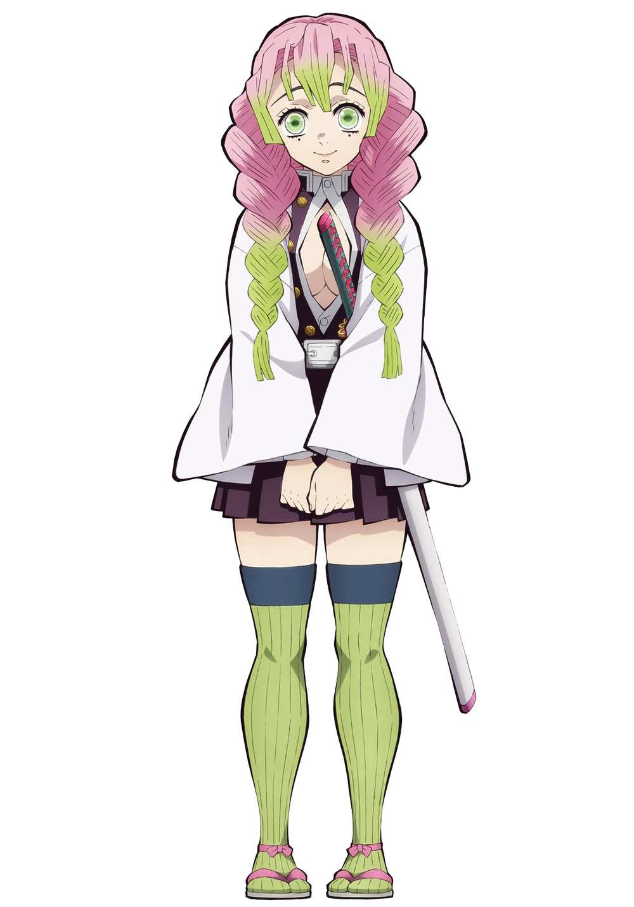

← Back
The Hashira
The Hashira are the nine strongest swrodsmen of the Demon Slayer Corps.
Each Hashira has mastered a unique Breathing Style and possesses extraordinary combat abilities.
They stand as humanity's final line of defense against the most powerful demons, risking their lives to protect
innocent people from the threat of Muzan Kibutsuji and his Twelve Kizuki.
About The Hashira
The Hashira (柱), meaning "Pillars", are the highest-ranking warriors within the Demon Slayer Corps.
Becoming a Hashira requires exceptional skill, years of dedication, and remarkable achivements in battle.
Every Hashira has mastered a Breathing Style to an extraordinary level, allowing them to defeat even the strongest demons.
Although they differ greatly in personality, beliefs, and fighting techniques, all Hashira share one goal
to eradicate demons and safeguard humanity. Throughout the series, they server as mentors, allies, and powerful
protectors who inspire the next generation of Demon Slayers.
Meet the Nine Hashiras
"Each Hashira carries a unique legacy, fighting style, and unwavering resolve."

Kyojuro Rengoku
Flame Hashira
"Set your heart ablaze."
Brave, honorable, and endlessly optimistic, Rengoku inspires everyone around
him with his unwavering determination and unmatched spirit.
Rengoku =>

Giyu Tomioka
Water Hashira
Quiet and reserved, Giyu is one of the Corps' most skilled swordsmen,
known for his calm judgment and exceptional mastery of Water Breathing.
Giyu =>

Tengen Uzui
Sound Hashira
The flamboyant former shinobi who believes every battle should be fought with style, speed, and absolute confidence.
Tengen =>

Mitsuri Kanroji
Love Hashira
Compassionate, cheerful, and incredibly powerful, Mitsuri combines immense physical strength with graceful swordsmanship.
Mitsuri =>

Obanai Iguro
Serpent Hashira
A disciplined warrior whose unique Serpent Breathing technique and unwavering loyalty make him one of the Corps' deadliest fighters.
Obanai =>

Muichiro Tokito
Mist Hashira
A young prodigy who rose to Hashira rank within months, possessing extraordinary natural talent and incredible speed.
Muichiro =>

Gyomei Himejima
Stone Hashira
The strongest Hashira, respected by every member of the Corps for his unmatched strength, wisdom, and unwavering faith.
Explore Gyomei =>

Shinobu Kocho
Insect Hashira
Unable to decapitate demons with brute force, Shinobu instead developed deadly wisteria-based poisons and lightning-fast techniques.
Shinobu =>

Sanemi Shinazugawa
Wind Hashira
Aggressive and fearless, Sanemi relentlessly hunts demons with his ferocious Wind Breathing techniques and indomitable will.
Sanemi =>
The Strength of the Hashira
The Hashira represent the pinnacle of the Demon Slayer Corps.
Each one has survived countless battles, mastered their Breathing Style, and earned the respect
of both allies and enemies. Their courage, sacrifice, and determination define what it truly means to be a Demon Slayer.
Fun Facts
- There are 9 active Hashira during most of the series.
- Every Hashira specializes in a different Breathing Style.
- The title "Hashira" is the highest rank within the Demon Slayer Corps.
- Several Hashira awaken the Demon Slayer Mark during the final battles.
- Together, they play a crucial role in humanity's fight against Muzan Kibutsuji.